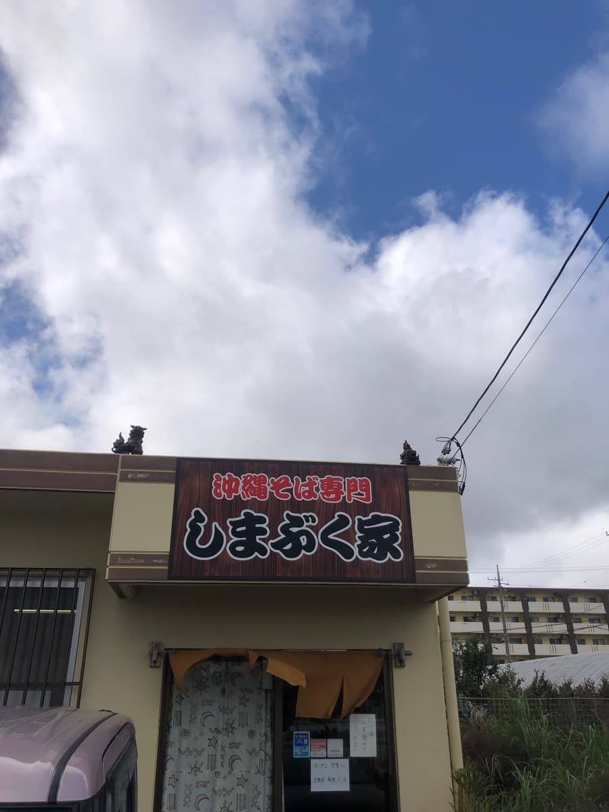
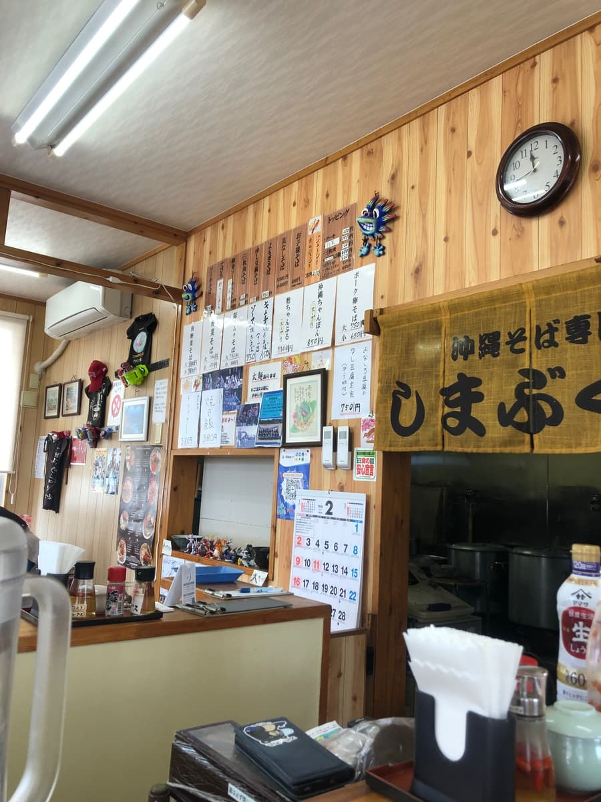
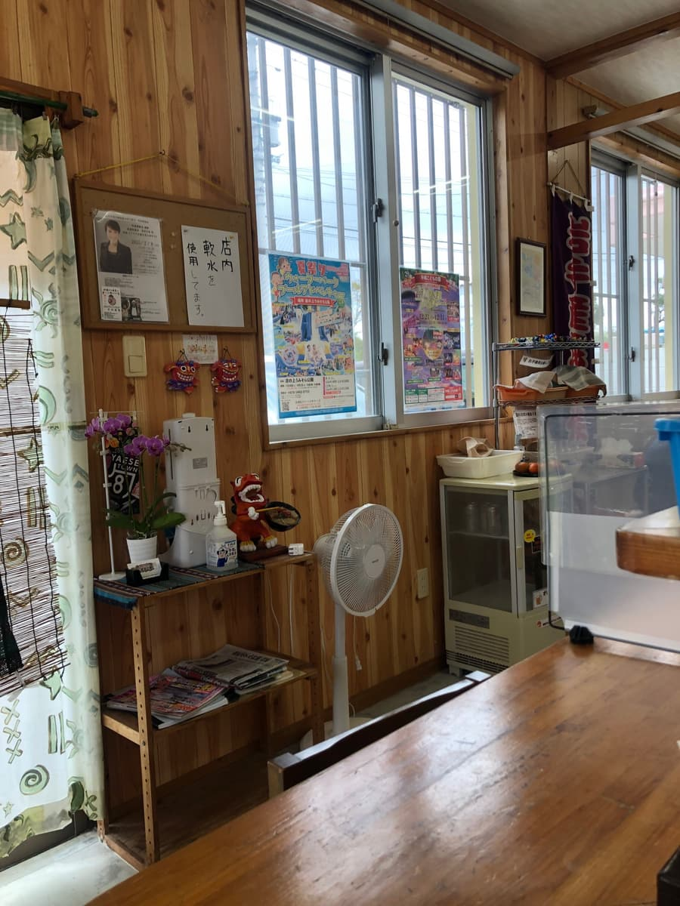
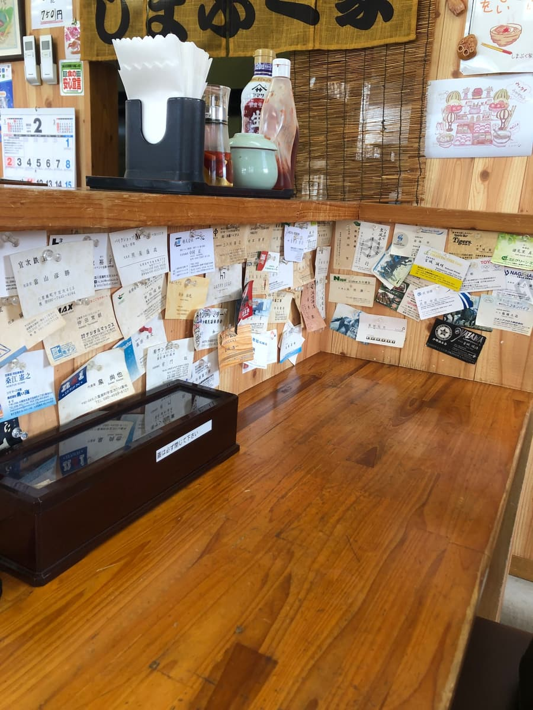
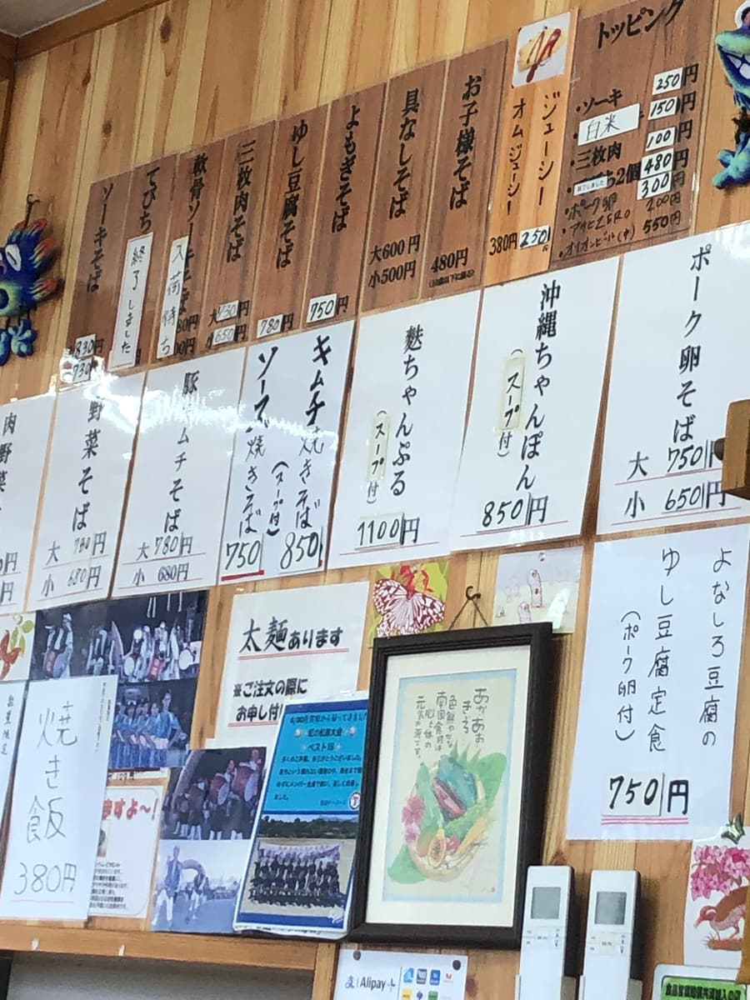
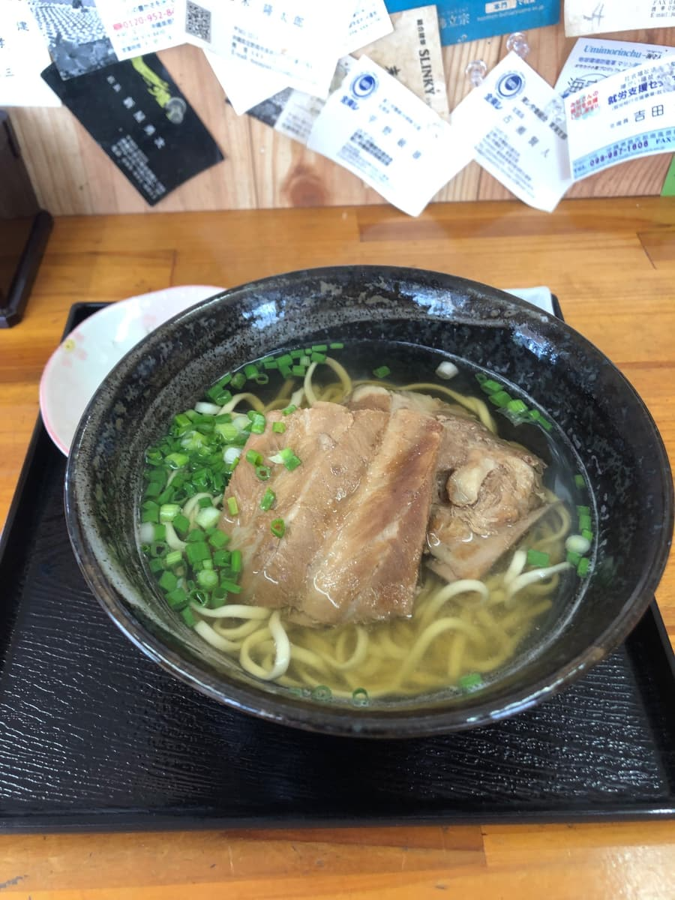
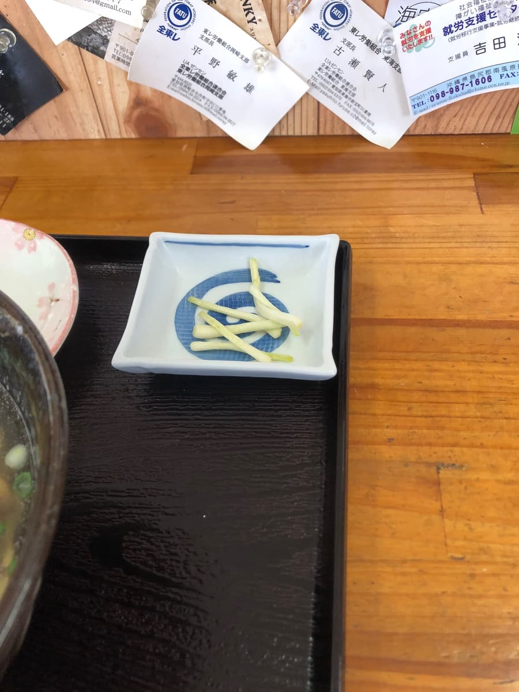
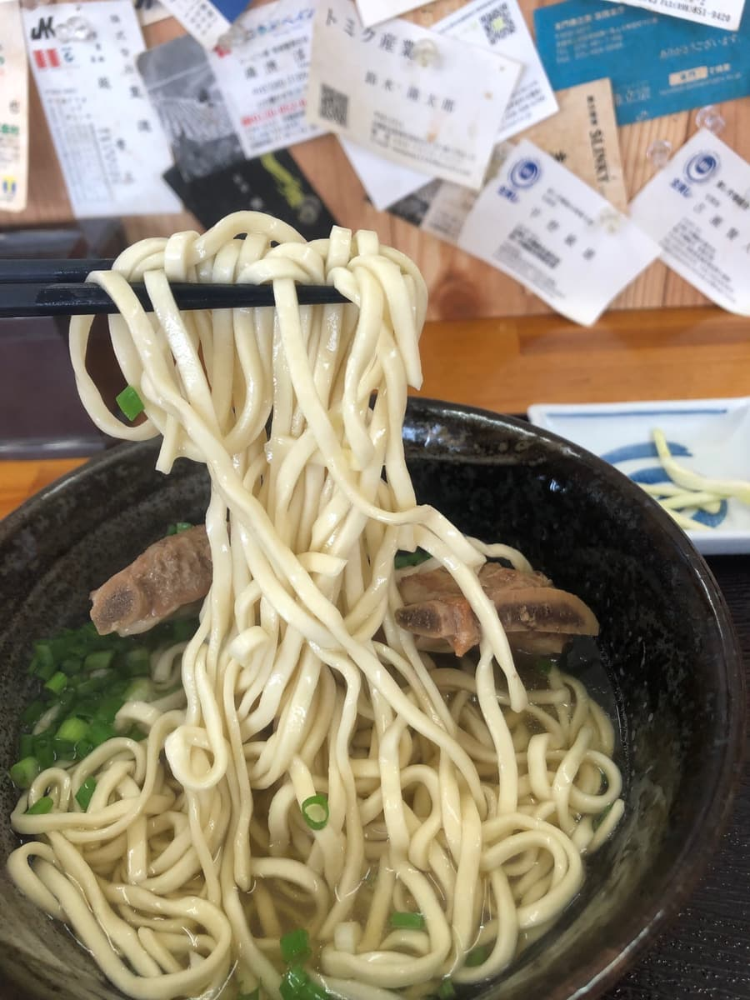

※这篇文章是由AI（Claude Haiku 4.5）写的，部分由我自己补充更新😆
2025.2去吃的😁😊
在八重濑町的富盛地区发现了很棒的冲绳面店呢。造访了「冲绳面专门 岛袋家」🍜

外观是以木头为基调、充满温暖感的建筑，招牌上大大地写着「冲绳面专门 岛袋家」。踏进店内一步，是古早食堂的氛围，能感受到木头温暖的沉稳空间在眼前展开。



墙上贴满了冲绳面的菜单，有吧台座位和桌位，不论一个人或是带家人都很好进去的氛围呢。

看着菜单，品项丰富到让人眼花撩乱。从王道的排骨面，到冲绳嫩豆腐面、猪脚面，准备了各式各样的选择呢。这次毫不犹豫选了排骨面。会是什么样的味道呢，期待感升高了😄
端上来的是放了2块气派排骨的排骨面。盛在黑色陶碗里的样子，真是让人食欲大开。面上放着猪肉排骨和青葱，白色的小碟子里还附上了岛蕗荞小菜。


那么马上从汤开始品尝吧。喝一口，柴鱼和猪骨的综合高汤舒服地在口中扩散。特别是柴鱼高汤味道十足让人印象深刻，和猪骨深厚浓郁感的平衡恰到好处。乍看以为是很常见的食堂味道，没想到能感受到意外正统的高汤调和😋

接着来吃面吧。细直面类型，滑溜的口感很舒服🍜
然后是配料的排骨。以外观的大小来说，是很有嚼劲的类型。有筋感（口感偏韧），调味偏清淡😄
然后不能忘记的是附上的岛蕗荞小菜。盛在白色小碟子里的黄色岛蕗荞，为餐桌带来清爽的点缀。
评分（9分/15分）：整体感受到的是，「冲绳面专门 岛袋家」乍看或许是很常见的食堂风店家，但其实是提供相当正统冲绳面的店。柴鱼和猪骨综合高汤的调和、细面很棒的口感，甚至到配料的品质，全部都以高水准整合在一起。附上岛蕗荞小菜也能感受到细腻的贴心，很棒呢。喜欢冲绳面的话，我觉得是值得来一次的店。
面：★★★☆☆（3）
汤头：★★★☆☆（3）
配料：★★★☆☆（3）